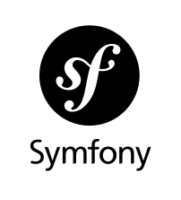
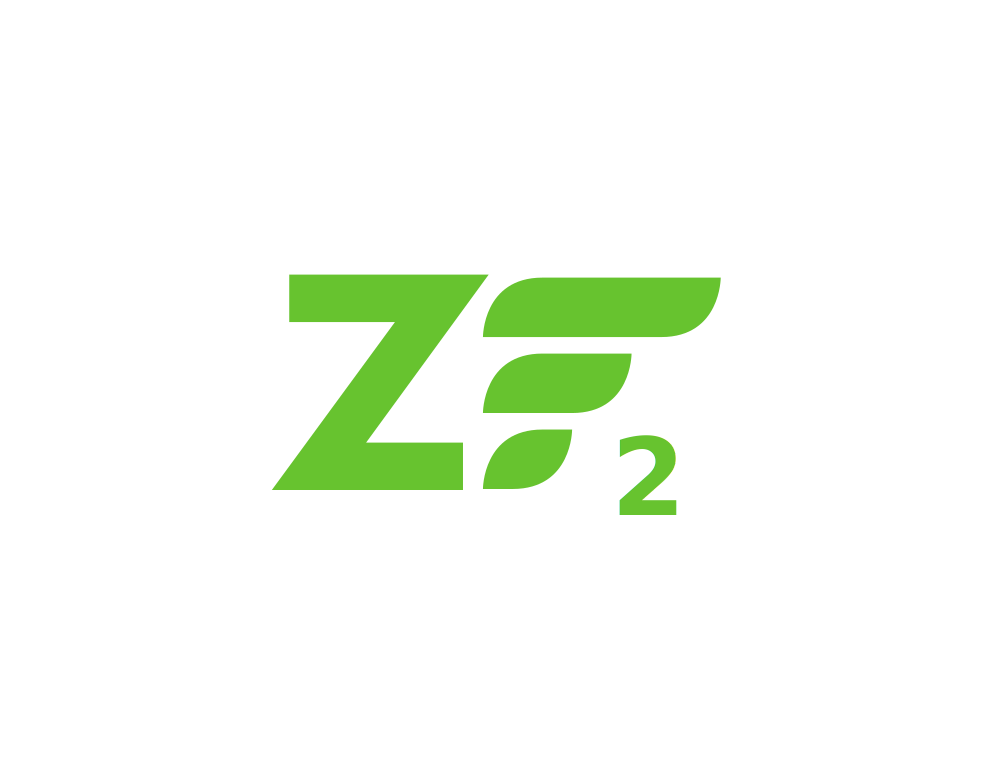

Palantir.net
PHP 7
The New New PHP
Presented by Larry Garfield (@Crell)
@Crell

- Senior Architect, Palantir.net
- Drupal 8 Web Services Lead
- Drupal Representative, PHP-FIG
implements Huggable
#1
#2
#3
usort($array, function ($a, $b) {
if ($a < $b) {
return -1;
}
elseif ($a > $b) {
return 1;
}
else {
return 0;
}
});
T_SPACESHIP
<=>
usort ($array, function($a, $b) {
return $a <=> $b;
});
usort($people, function (Person $a, Person $b) {
if ($a->lastName() < $b->lastName()) {
return -1;
}
elseif ($a->lastName() > $b->lastName()) {
return 1;
}
else {
if ($a->firstName() < $b->firstName()) {
return -1;
}
elseif ($a->firstName() > $b->firstName()) {
return 1;
}
else {
return 0;
}
}
});
usort($people, function (Person $a, Person $b) {
return $a->lastName() < $b->lastName() ? -1
: ($a->lastName() > $b->lastName() ? 1
: $a->firstName() < $b->firstName() ? -1
: ($a->firstName() > $b->firstName() ? 1 : 0));
});
You're Fired!
usort($people, function (Person $a, Person $b) {
return [$a->lastName(), $a->firstName()] <=> [$b->lastName(), $b->firstName()];
});
#4
$username = $username ? $username : 'Anonymous';
$username = $username ?: 'Anonymous';
But what if $username doesn't exist?
Notice: Undefined variable: username on line 3
$username = isset($username) && !is_null($username) ? $username : 'Anonymous';
NULL coalesce!
$username = $username ?? 'Anonymous';
$username = $submitted['username'] ?? $user->username() ?? 'Anonymous';
?? checks setness, not truthiness
#5
Cryptography is hard
Don't we have this already?
rand()isn't really randommcrypt()isn't really randomfread(fopen('/dev/urandom'), 16)isn't portable- openssl is hard to use

What we want is an easy
Cryptographically Secure Pseudo-Random Number Generator
CSPRNG!
Ask and ye shall receive…
$junk = random_bytes(16);
$val = random_int(1, 100);
If you're not using these functions for security...
- password_hash() / password_verify()
- random_bytes()
- random_int()
You're Doing It Wrong!
#6
Testing is hard
$mock_repository = $this
->getMockBuilder(ThingieRepository::class)
->disableOriginalConstructor()
->getMock();
$obj1 = new Thingie();
$obj1->setVal('abc');
$obj2 = $this->getMockBuilder(Thingie::class)
->disableOriginalConstructor()
->getMock();
$obj1 ->method('getVal')->willReturn('def');
$map = [
[1, $obj1],
[2, $obj2],
];
$mock_repository
->method('load')->will($this->returnValueMap($map));
$subject = new ClassUnderTest($mock_repository);
$this->assertTrue($subject->findThings());
Fakes are easy
$fake_repository = new class extends ThingieRepository {
public function __construct() {}
public function load($id) {
switch ($id) {
case 1:
$obj1 = new Thingie();
$obj1->setVal('abc');
return $obj1;
case 2:
return new class extends Thingie {
public function getVal() {
return 'def';
}
};
default:
return null;
}
}
};
$subject = new ClassUnderTest($fake_repository);
$this->assertTrue($subject->findThings());
One-off dependencies
new Service(new class implements LoggerInterface {
use LoggerTrait;
public function log($message) {
print $message . PHP_EOL;
}
});
Constructors, too
new class($logger) implements ServiceInterface {
public function __construct(LoggerInterface $logger) {
$this->logger = $logger;
}
public function doServiceStuff() { }
};
#7
Fatal errors suck
Recoverable errors… aren't
function doStuff(Request $r) {
// ...
}
$u = new User();
doStuff($u);
Catchable fatal error: Argument 1 passed to doStuff() must be an instance of Request, instance of User given
function doStuff(Request $r) {
// ...
}
$u = new User();
try {
doStuff($u);
}
catch (\TypeError $e) {
print "Wrong variable type, dummy." . PHP_EOL;
}
try {
nonexistant_function();
}
catch (\Error $e) {
print "The error was " . $e->getMessage();
}
try {
include 'buggy_file.php';
}
catch (\ParseError $e) {
$logger->error("That file is buggy!");
}
E_FATAL, E_RECOVERABLE_ERROR, E_PARSE, E_COMPILE_ERROR
Exceptions: The user screwed up
Errors: The coder screwed up
PHP 5
set_exception_handler(function(\Exception $e) {
// ...
});
PHP 7
set_exception_handler(function(\Throwable $e) {
// ...
});
PHP 5 & 7
set_exception_handler(function($e) {
// ...
});
#8
Assertions suck
function doStuff(array $def) {
assert(isset($def['key']) && isset($def['value']), 'Invalid def');
// ...
}
function doStuff(array $def) {
assert('isset($def[\'key\']) && isset($def[\'value\'])', 'Invalid def');
// ...
}
PHP 7: Expectations
ini_set('assert.exception', 1);
ini_set('zend.assertions', 1);
class InvalidDef extends AssertionError {}
function doStuff(array $def) {
assert(isset($def['key']) && isset($def['value']), new InvalidDef('Invalid def'));
// ...
}
Assertions are actually not-broken!
#9
You're not still doing iterators the hard way,
are you?
class RemoteSource implements Iterator {
protected $key;
protected $current;
protected $client;
public function __construct(Client $client) {
$this->client = $client;
$this->key = 0;
}
public function current() {
return $this->current;
}
public function next() {
$this->current = $this->client->get('http://api.com/entry/' . $this->key);
$this->key++;
}
public function key() {
return $this->key;
}
public function valid() {
return (bool)$this->current;
}
public function rewind() {
throw new Exception();
}
}
$result = $db->query(...);
$iterator = new AppendIterator();
$iterator->append(new RemoteSource($client));
$iterator->append($result);
foreach ($iterator as $item) {
// Do something.
}
In PHP 7...
function getRemoteValues($client) {
$key = 0;
while ($val = $client->get('http://api.com/entry/' . $key++)) {
yield $val;
}
}
function getLocalValues() {
foreach (db()->query(...) as $record) {
yield $record;
}
}
function getValues($client) {
// This is the new part.
yield from getRemoteValues($client);
yield from getLocalValues();
return 'done';
}
$values = getValues($client);
foreach ($values as $item) {
// Do stuff
}
print $val->getReturn() . PHP_EOL;
#10
What does this do?
$$foo['bar']['baz']
$foo->$bar['baz']
$foo->$bar['baz']()
Foo::$bar['baz']()
Foo::$bar[1][2][3]()
Uniform variable syntax
Always Left-To-Right
It's logical
$foo()['bar']()
[$obj1, $obj2][0]->prop
getStr(){0}
$foo['bar']::$baz
$foo::$bar::$baz
$foo->bar()::baz()
$foo()()
(...)['foo']
(...)->foo
(...)->foo()
(...)()
(function() { ... })()
($obj->closure)()
But I'm scared of .0 releases!

- 
- 


http://phpversions.info/php-7/
PHP 7-ready hosts: 28 and counting
Larry Garfield
Senior Architect, Palantir.net
Let's Make Something Good Together.
Keep tabs on our work at @Palantir